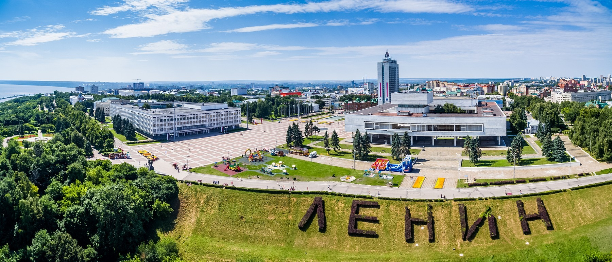

Город ульяновск

Улья́новск (в 1648—1780 годах — Синби́рск, в 1780—1924 годах — Симби́рск) — город в России, административный
центр Ульяновской области[4]. Является городом областного значения[5], образует муниципальное образование город
Ульяновск со статусом городского округа[6]. С 2015 года является единственным городом литературы ЮНЕСКО в России.
Расположен на Приволжской возвышенности, на берегах рек Волги (Куйбышевское водохранилище) и Свияги, в месте
сближения их русел[7]. Находится в 890 км к востоку / юго-востоку от Москвы.
Население: 617 352[2][8] чел. (2021) (22-е место в РФ).
Основан Богданом Хитрово (окольничим) по указу царя Алексея Михайловича в 1648 году как крепость Синбирск для
защиты восточных границ Русского государства от набега кочевых племён. В ходе административной реформы Екатерины
II в 1780 году стал главным городом Симбирского наместничества, которое в 1796 году указом Павла I преобразовано в
Симбирскую губернию.
Указом Президента Российской Федерации от 2 июля 2020 городу было присвоено звание «Город трудовой доблести»[9].
Основание города
Основан в 1648 году (лета 7156)[21] «по Государеву Цареву и Великаго Князя Алексея Михайловича, всея Великия и Малыя
и Белыя Росии и Самодержавца, указу», окольничим и воеводой Богданом Матвеевичем Хитрово и дьяком Григорием
Кунаковым, как крепость Синбирск (позже — Симбирск), с целью защиты восточных границ Русского царства от набега
кочевых племён[22], а также с целью колонизации богатого природными ресурсами Поволжья.
Деревянный кремль[23] был построен весной-летом 1648 года на «Венце»[24] Синбирской горы. Он представлял собой
правильный четырёхугольник, по углам и сторонам которой возвышались восемь башен с тремя воротами, вокруг выкопан
глубокий ров[25]. В середине крепости стоял Троицкий собор, к западной стене примыкал Спасский женский монастырь. В
кремле жили воевода, дворяне, боярские дети и служилые люди[25]. С юга и востока примыкали слободы с населением
«попроще»[26].
К 1652 году город-крепость Синбирск был отстроен и вошёл в подчинение Приказа Казанского дворца. К 1654 году была
построена Синбирская засечная черта, ставшая продолжением Корсунского участка Белгородской черты, и образован
Синбирский уезд.
В 1666 году в Синбирске полгода жила грузинская царица Елена Леонтьевна с сыном и митрополитом Епифанием[27][28].
XVII—XIX века
Осенью 1670 года город Синбирск безуспешно осаждало повстанческое войско под предводительством донского казачьего
атамана Степана Тимофеевича Разина, гарнизон засел в Синбирском кремле и отбил 4 штурма восставших[29]. Степан Разин
не смог успешно завершить осаду кремля. 4 октября он был дважды ранен в бою против воеводы Барятирского, товарищи
вынесли его к реке, погрузили в лодку и отплыли вниз по Волге[30].
В июне 1671 года Симбирскую крепость безуспешно осаждал ещё один разбойник — соратник С.Т. Разина Фёдор Шелудяк[31].
В 1672 году, за «двукратную храбрую оборону от разбойника Стеньки Разина: в первуй раз при воеводе Ивана
Милославского[32] от самого Стеньки Разина, а во второй раз через год от есаула разинской шайки Федьки Шелудяка»,
городу Синбирску, царём Алексеем Михайловичем Тишайшим, был пожалован первый герб[33].
В 1678 году в Синбирске (в кремле, остроге, посаде), в 605 дворах жило 1579 человек[34][35].
Указом Пётра I от 18 (29) декабря 1708 года в ходе административно-территориального деления Русского царства на
губернии Синбирск с уездом вошёл в состав Казанской губернии[36].
22 ноября (3 декабря) 1717 году Синбирский уезд был передан в состав вновь образованной Астраханской губернии.
В 1719 году из Синбирского уезда образована Синбирская провинция[37].
В 1722 году проездом по Волге в Астрахань в Синбирске из-за шторма остановился император Пётр I и подарил городу
икону «Богоматерь умягчение злых сердец», которая впоследствии хранилась в Троицком соборе[38][39].
В 1728 году Синбирская провинция снова была передана в Казанскую губернию.
В 1729 году утверждён новый герб Синбирска — в лазуревом поле белый столб, увенчанный золотой короной[40].
Так как город был деревянным, его периодически уничтожали пожары. Сильнейший пожар вспыхнул в 1671 году. После него
пришлось заново отстраивать кремль. Город выгорал также в 1687, 1694, 1696, 1730, 1740 годах[41][42].
4 (15) июля 1763 года родился Святой Блаженный Андрей Симбирский — небесный покровитель Симбирска.
В 1766 году Манифестом Екатерины II вводилась должность городского головы (см. статью: Симбирские городские головы).
С 5 по 8 (19) июня 1767 году Синбирск посетила императрица Екатерина II[39][43]. «Город самый скаредный, — писала
она Никите Панину, — и все дома, кроме того, в котором я стою (дом купца И. С. Мясникова), в конфискации за
недоимки»[44].
1 (12) октября 1774 году из Яицкого городка в Синбирск, в железной клетке, доставил пленного Емельяна Пугачёва лично
Суворов Александр Васильевич. На допрос самозванца, которого допрашивали со 2 по 6 октября[45], из Москвы прибыли П.
И. Панин и П. С. Потёмкин. 26 октября Пугачёв был отправлен из Синбирска в Москву.